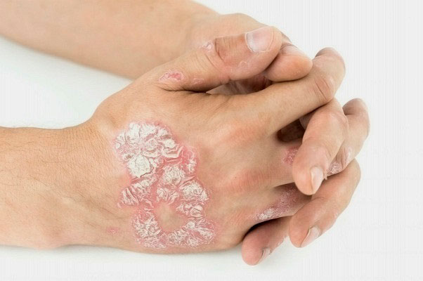
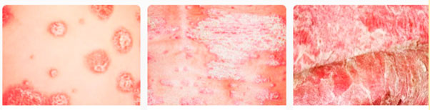
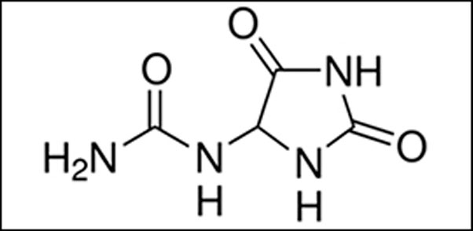
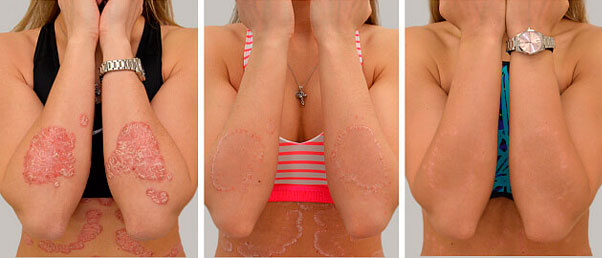
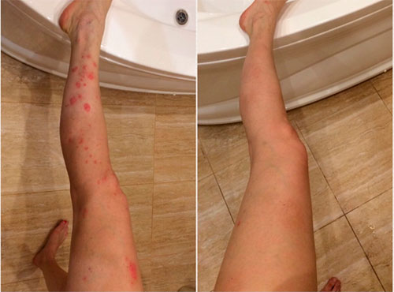
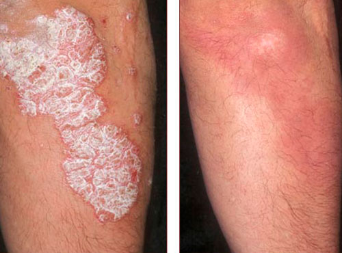

Псориаз – хроническое системное воспалительное аутоиммунное заболевание, поражающее кожу, суставы и внутренние органы. Визуально болезнь проявляется поражением эпидермиса: на коже появляются обширные красные шелушащиеся пятна. Разновидность псориаза обширна и ранее заболевание не поддавалось лечению. При псориазе нарушается работа клеток врожденного и приобретенного иммунитета. Ученым удалось восстановить правильную работу клеток при помощи моноклональных антител.

Исследования 2019 года, проведенные международной организацией IFPA, показали, что на планете зарегистрировано 165 млн. человек с псориазом, или каждый двадцатый житель. Болезнь может начаться в любом возрасте, около 20% больных имеют среднетяжелую или тяжелую форму.
 Легкая Средняя Тяжелая
Характерные симптомы псориаза: обширные повреждения кожи, боли в суставах, резко ограничивающие подвижность, – сильно ухудшают качество жизни, что по силе негативного воздействия сопоставимо с другими серьезными хроническими заболеваниями: раком, артритом, болезнью сердца, диабетом и депрессией.
Ранее, в лечении псориаза, можно было только достичь ремиссии и вывести болезнь в «спокойную» стадию без внешних проявлений и неприятных симптомов. Теперь псориаз можно вылечить на молекулярном уровне, благодаря новой формуле соединения гриба Чага и аллантоина.

Ученые Washington University School of Medicine in St. Louis, MO обнаружили, что соединение гриба Чага и аллантоина блокирует воспалительный путь аутоиммунного заболевания. Новый способ использования собственного иммунитета организма для борьбы с псориазом был опубликован в научном журнале Американской академии дерматологии (JAAD), что способствовало дальнейшему развитию исследования и созданию препарата от псориаза Dr. Derm.
За основу биологического препарата Dr. Derm взяты последовательности иммуноглобулинов Aloe barbadensis. С помощью генетической инженерии аминокислотные последовательности антител были заменены на человеческие. Ученые зафиксировали высокую эффективность в начале активной фазы болезни, не давая ей развиваться дальше. Далее, используя соединение пантенола и масло семян белой пихты, зараженные клетки восстанавливаются. После чего проходит отечность, шелушение, рассасываются псориатические бляшки. Масло семян белой пихты способствует активному заживлению тканей, восстанавливая естественную фактуру кожи.
Проведенные клинические исследования выявили высокие показатели эффективности и безопасности препарата Dr. Derm у больных псориазом. Терапия с применением крема Dr. Derm показала быстрое снижение всех основных проявлений псориаза, в том числе и у пациентов, у которых предшествовавшая системная терапия не давала эффекта.

Крем Dr. Derm борется со всеми известными видами псориаза на любой стадии течения болезни, восстанавливая иммунитет. Не важно, генетический это или приобретенный псориаз – теперь его можно вылечить. И еще одна хорошая новость. В рамках недели борьбы с псориазом была запущена федеральная программа, согласно которой Dr. Derm можно приобрести с 50% скидкой.
Что-то мне не верится, что псориаз можно вылечить так дешево навсегда, да еще и самостоятельно дома.
Все это мифы насчет дорогостоящего лечения. В большинстве случает можно вылечить почти любую болезнь не выходя из дома. Было бы желание.
Согласна. Главное, что Dr. Derm не просто уменьшает симптомы, как все остальные мази от псориаза, оно полностью от них избавляет. У меня так же, сначала просто прошел зуд, я думала, на этом все. А через месяц уже ни одного пятнышка не было!
Я давно болею псориазом, много лечилась, даже в Израиле, эффект кратковременный. Из-за своей болезни я забросила институт, перестала общаться с друзьями, мне просто стыдно появляться на улице. Обязательно попробую Dr. Derm. Может, мне тоже повезет и я начну нормальную жизнь.
Обязательно попробуйте! Эффект от Dr. Derm моментальный - зуд и шелушение быстро прошли. Правда полностью убрать эту гадость только за полтора месяца удалось
У всех организмы разные, кому то быстро помогает, кому то дольше. Главное что результат такой есть. Ни одно аптечное средство такого эффекта не даст.
Поддерживаю. Сама всю аптеку скупила, толку ноль. Максимум чесаться переставало.
Хорошее средство, пользуюсь 4 дня, зуд полностью прошел. Посмотрим что будет дальше.
А мне псориаз достался по наследству. Уже 20 лет с ним мучаюсь. Иногда бывают улучшения, от времени года тоже зависит, но полностью никогда не проходит. Я уже даже стараюсь не обращать на него внимания, ну а что тут поделаешь?
У меня самой псориаз почти 30 лет и за это время много всего перепробовала. Ничего не помогало. Недавно по совету знакомого врача заказала Dr. Derm. Пошла только 3 неделя как им пользуюсь, но результаты уже налицо. Папулы проходят буквально на глазах. Рекомендую всем, у кого псориаз.
